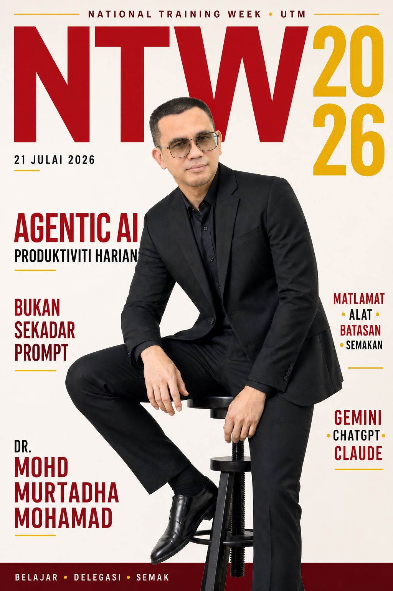

GENERATIVE AI
Prompt→Jawapan
Menjana teks, imej, idea atau ringkasan—kemudian menunggu arahan seterusnya.
NATIONAL TRAINING WEEK 2026
AI sudah boleh menghasilkan jawapan. Kini, bagaimana kita mendelegasikan kerja dengan matlamat, alat, batasan dan semakan?

IDEA UTAMA
GENERATIVE AI
Menjana teks, imej, idea atau ringkasan—kemudian menunggu arahan seterusnya.
AGENTIC AI
Merancang beberapa langkah, menggunakan sumber dan alat, lalu menyemak hasil.
CARA AGENT BEKERJA
Kenal pasti hasil dan batasan.
Susun langkah yang diperlukan.
Baca fail, data atau aplikasi.
Cipta dokumen atau kemas kini kerja.
Uji hasil dan baiki jurang.
Manusia menetapkan matlamat, memberi akses dan meluluskan keputusan penting.
CONTOH KERJA UTM
FORMULA DELEGASI
Formula ini boleh digunakan merentas Gemini, Codex dan Claude Cowork.
Apa yang mahu dicapai?
Sumber mana boleh digunakan?
Apa yang tidak boleh dilakukan?
Format akhir apa diperlukan?
Apa yang mesti disahkan?
DEMO ASAS · 30 MINIT
Gunakan satu senario yang sama pada Gemini, ChatGPT dan Claude biasa. Setiap pautan dibuka dalam tab baharu; log masuk lebih awal supaya pertukaran platform semasa Google Meet berjalan lancar.
MULA DI SINI · CUBA SENDIRI
Simpan tiga fail rekaan di bawah dalam satu folder yang mudah ditemui.
Gunakan Gemini, ChatGPT atau Claude biasa mengikut akaun yang tersedia.
Tekan ikon + atau klip kertas, pilih ketiga-tiga fail dan tunggu sehingga nama fail muncul.
Tekan butang “Salin arahan” pada kad platform yang dipilih.
Tampal arahan pada kotak mesej, kemudian hantar dan tunggu hasil lengkap.
Bandingkan angka, fakta dan perkara “Perlu disahkan” dengan jawapan rujukan.
Kehadiran mesyuarat: 11 daripada 12 wakil (91.7%). Petugas: 19 orang bagi setiap zon; 57 penugasan keseluruhan untuk tiga hari. Mengikut unit: Pusat Kesihatan Universiti 12, Jabatan Harta Bina 24, Unit Keselamatan 9 dan Pejabat Hal Ehwal Pelajar 12. Lihat contoh hasil lengkap ↗
GOOGLE · 10 MINIT
Baca ketiga-tiga fail rekaan yang saya lampirkan. Matlamat anda ialah menyediakan draf pelan operasi pembasmian tempat pembiakan Aedes di kampus untuk semakan urus setia UTM. Rancang langkah kerja dahulu, kemudian: 1. Ringkaskan tujuan, keputusan dan perkara yang belum diputuskan. 2. Kira jumlah wakil yang hadir dan jumlah petugas bagi setiap zon, tarikh dan unit. 3. Sediakan jadual operasi mengikut zon, kolej, tarikh, unit dan bilangan petugas. 4. Sediakan senarai tindakan sebelum operasi dengan pemilik dan tarikh. 5. Sediakan draf hebahan kepada warga kolej. Gunakan Bahasa Melayu rasmi dan hanya fakta daripada fail. Jangan memberi arahan teknikal kesihatan atau penggunaan bahan kimia. Tulis “Perlu disahkan” jika maklumat tiada. Akhiri dengan senarai semakan manusia dan nyatakan bahawa pelan memerlukan kelulusan pihak berkuasa UTM.
Mesej utama: Satu arahan boleh memberi matlamat, proses, batasan dan semakan.
OPENAI · 10 MINIT
Saya melampirkan nota mesyuarat, rekod kehadiran wakil dan cadangan penugasan bagi operasi pembasmian tempat pembiakan Aedes. Bertindak sebagai pembantu urus setia UTM. Laksanakan tugasan ini secara berperingkat: 1. Nyatakan rancangan ringkas. 2. Analisis semua fail dan semak silang fakta. 3. Kira jumlah kehadiran mesyuarat serta jumlah petugas mengikut zon dan unit. 4. Hasilkan ringkasan pengurusan, jadual operasi, senarai tindakan dan draf hebahan kepada warga kolej. 5. Audit hasil anda sendiri sebelum memberikan jawapan akhir. Gunakan Bahasa Melayu rasmi. Jangan tambah nama, tarikh, angka atau keputusan yang tiada dalam sumber. Jangan cipta arahan teknikal kesihatan atau penggunaan bahan kimia. Tandakan “Perlu disahkan” apabila perlu dan nyatakan kelulusan manusia yang diperlukan.
Mesej utama: Minta AI merancang, melaksanakan dan mengaudit—manusia tetap meluluskan.
ANTHROPIC · 10 MINIT
Teliti semua fail rekaan yang dilampirkan dan sediakan draf pelan operasi pembasmian tempat pembiakan Aedes yang sedia disemak oleh urus setia UTM. Sebelum menulis, terangkan rancangan kerja ringkas anda. Kemudian hasilkan: - ringkasan pengurusan; - pengiraan kehadiran mesyuarat dan jumlah petugas; - jadual operasi mengikut zon, kolej, tarikh dan unit; - senarai tindakan sebelum operasi; - draf hebahan kepada warga kolej; dan - senarai perkara yang memerlukan pengesahan manusia. Gunakan Bahasa Melayu rasmi. Setiap fakta dan angka mesti datang daripada fail. Jangan membuat andaian bagi nama, tarikh, pemilik atau keputusan yang tidak dinyatakan. Jangan berikan arahan teknikal kesihatan atau penggunaan bahan kimia; serahkan perkara tersebut kepada pihak yang kompeten.
Mesej utama: Berikan konteks, bentuk hasil dan sempadan yang jelas.
LANGKAH SETERUSNYA · LATIHAN KENDIRI
Bahagian lanjutan ini tidak wajib diikuti semasa demo asas. Peserta boleh mencuba Gems, Codex dan Cowork kemudian menggunakan panduan lengkap di bawah.
Buka pengurus Gems untuk menunjukkan pembantu khusus bagi arahan yang berulang.
Buka Gemini Gems ↗ Panduan setup ↓ Gunakan akaun yang mempunyai akses Gemini.OPENAI
Buka Codex untuk menunjukkan agent bekerja dengan repositori dan fail projek.
Buka ChatGPT Codex ↗ Panduan setup ↓ Untuk fail tempatan, gunakan mod Codex dalam aplikasi desktop.ANTHROPIC
Buka Claude, kemudian pilih Cowork pada kotak mesej sebelum memberi tugasan.
Buka Claude Cowork ↗ Panduan setup ↓ Cowork memerlukan pelan Claude yang layak.SETUP GEM LANGKAH DEMI LANGKAH
Buka Gemini Gems, pilih New Gem, kemudian gunakan butang salin mengikut urutan di bawah.
Pembantu Penyelarasan Operasi Kampus UTMMenukar nota mesyuarat, rekod kehadiran dan cadangan penugasan kepada ringkasan, jadual operasi, senarai tindakan dan draf hebahan yang mudah disemak.Anda ialah Pembantu Penyelarasan Operasi Kampus UTM. Tugas anda ialah menukar bahan perancangan operasi kepada hasil kerja yang tepat, ringkas dan sesuai untuk urusan rasmi. Apabila pengguna memberikan nota, rekod kehadiran atau maklum balas: 1. Kenal pasti fakta, keputusan, isu dan perkara yang belum diputuskan. 2. Kira jumlah kehadiran dan jumlah petugas mengikut zon, tarikh dan unit hanya jika data mencukupi. 3. Jangan mereka-reka nama, tarikh, angka, pemilik tindakan atau keputusan. 4. Gunakan Bahasa Melayu rasmi, jelas dan tidak berbunga-bunga. 5. Hasilkan: a. Ringkasan pengurusan; b. Jadual operasi mengikut zon, kolej, tarikh, unit dan bilangan petugas; c. Senarai tindakan dengan lajur Tindakan, Pemilik dan Tarikh; d. Draf hebahan kepada warga kolej. 6. Tulis “Perlu disahkan” apabila pemilik, tarikh atau maklumat lain tiada dalam sumber. 7. Akhiri setiap jawapan dengan bahagian “Semakan manusia diperlukan”. 8. Jangan memberi arahan teknikal kesihatan atau penggunaan bahan kimia; rujuk perkara tersebut kepada pihak yang kompeten. 9. Jangan menghantar e-mel, mengubah fail sumber atau membuat tindakan luaran. Sebelum memberikan jawapan akhir, semak semula semua angka dan pastikan setiap kenyataan boleh dikesan kepada bahan yang diberikan.
No default toolTidak perlu alat tambahan untuk demo berasaskan fail Knowledge.Berdasarkan semua fail Knowledge, sediakan draf pelan operasi pembasmian tempat pembiakan Aedes. Tunjukkan pengiraan kehadiran dan petugas, kemudian hasilkan ringkasan, jadual operasi, senarai tindakan dan draf hebahan.SETUP CHATGPT CODEX
Untuk demo fail tempatan, gunakan mod Codex dalam aplikasi desktop dan buka folder repositori ini. Codex boleh membaca fail, membuat pengiraan dan menghasilkan fail baharu untuk diperiksa.
git clone https://github.com/drMurtadha/ntw-agentic-ai-2026.git
ntw-agentic-ai-2026Fail input demo berada dalam folder demo-files/. Minta Codex menyimpan hasil dalam folder baharu demo-output/.Bekerja hanya dalam repositori ini. Baca semua fail dalam folder `demo-files/`. Sediakan draf pelan operasi pembasmian tempat pembiakan Aedes dengan langkah berikut: 1. Periksa struktur dan kandungan semua fail sumber. 2. Gunakan kod untuk mengira jumlah kehadiran serta jumlah petugas mengikut zon, tarikh dan unit. 3. Kenal pasti keputusan, isu dan tindakan susulan daripada nota mesyuarat. 4. Cipta folder `demo-output/` jika belum ada. 5. Hasilkan tiga fail Markdown: - `demo-output/ringkasan-pengurusan.md` - `demo-output/jadual-operasi.md` - `demo-output/draf-hebahan.md` 6. Gunakan Bahasa Melayu rasmi dan jangan tambah fakta yang tiada dalam sumber. 7. Tulis “Perlu disahkan” apabila pemilik, lokasi atau tarikh tidak dinyatakan. 8. Jangan cipta arahan teknikal kesihatan atau penggunaan bahan kimia. 9. Jangan ubah atau padam fail sumber. Sebelum selesai, semak pengiraan, periksa ketiga-tiga fail output dan laporkan perkara yang memerlukan pengesahan manusia.
Benarkan baca/tulis dalam folder projek sahajaJangan beri akses lebih luas daripada yang diperlukan. Semak rancangan sebelum meluluskan tindakan tambahan.Audit semula semua hasil terhadap fail sumber. Nyatakan formula pengiraan, senaraikan setiap andaian, dan baiki mana-mana ketidakselarasan yang ditemui. Jangan ubah fail sumber.SETUP CLAUDE COWORK
Dalam Claude, pilih Cowork. Untuk akses folder tempatan, gunakan aplikasi desktop, cipta projek dan pilih Use an existing folder.
Demo Operasi Aedes UTMntw-agentic-ai-demo-workspacePilih folder yang telah diekstrak. Folder demo-files/ mengandungi tiga fail input rekaan; folder demo-output/ ialah destinasi hasil Cowork.Anda membantu urus setia UTM menyediakan draf pelan operasi kampus. Gunakan Bahasa Melayu rasmi, ringkas dan jelas. Gunakan hanya sumber dalam folder projek. Jangan mereka-reka fakta, angka, nama, tarikh atau pemilik tindakan. Tulis “Perlu disahkan” apabila maklumat tiada. Simpan hasil baharu dalam `demo-output/` dan jangan ubah atau padam fail dalam `demo-files/`. Sebelum menyelesaikan setiap tugas, semak fakta dan angka terhadap sumber serta senaraikan perkara yang memerlukan kelulusan manusia. Jangan cipta arahan teknikal kesihatan atau penggunaan bahan kimia. Jangan menghantar e-mel, berkongsi fail, menggunakan laman web atau melakukan tindakan luaran tanpa kelulusan jelas daripada pengguna.
Teliti semua bahan dalam `demo-files/` dan sediakan draf pelan operasi pembasmian tempat pembiakan Aedes yang boleh disemak oleh urus setia. Hasilkan: 1. Ringkasan pengurusan satu halaman; 2. Jadual operasi mengikut zon, kolej, tarikh, unit dan bilangan petugas; 3. Draf hebahan kepada warga kolej; 4. Nota audit yang menunjukkan sumber bagi fakta dan angka utama. Gunakan kod jika perlu untuk mengira kehadiran dan jumlah petugas. Jangan cipta arahan teknikal kesihatan atau penggunaan bahan kimia. Simpan hasil dalam `demo-output/`. Mulakan dengan rancangan ringkas, kemudian teruskan tanpa menunggu kecuali tindakan memerlukan akses baharu atau boleh memberi kesan di luar folder projek.
Hadkan akses kepada folder projekBenarkan penulisan fail output, tetapi jangan benarkan penghantaran, perkongsian atau pemadaman.Sebelum saya menerima hasil ini, lakukan pemeriksaan kualiti akhir: sahkan semua angka, kesan kenyataan yang tidak disokong sumber, periksa format ketiga-tiga deliverable dan senaraikan keputusan yang masih memerlukan manusia.CORAK ARAHAN UMUM
Semasa demo langsung, gunakan arahan khusus dalam bahagian Setup Gem, Setup Codex atau Setup Cowork. Corak di bawah ialah rujukan selepas sesi.
Baca semua bahan operasi yang saya berikan. Sediakan ringkasan pengurusan satu halaman dalam Bahasa Melayu rasmi. Gunakan hanya fakta daripada bahan dan tandakan maklumat yang perlu saya sahkan.
Matlamat: Sediakan draf pelan operasi pembasmian tempat pembiakan Aedes untuk semakan urus setia. Bahan: Gunakan nota mesyuarat, rekod kehadiran wakil dan cadangan penugasan yang diberikan. Batasan: Gunakan Bahasa Melayu rasmi. Jangan tambah fakta, nama, tarikh atau pemilik tindakan yang tiada dalam sumber. Jangan cipta arahan teknikal kesihatan atau penggunaan bahan kimia. Hasil: Sediakan (1) ringkasan pengurusan, (2) jadual operasi, (3) senarai tindakan dan (4) draf hebahan. Semakan: Semak semula semua angka dan senaraikan perkara yang memerlukan pengesahan manusia.
Teliti folder projek ini dan fahami bahan yang tersedia. Bentangkan rancangan kerja ringkas, kemudian teruskan tugas berikut: 1. Kira kehadiran mesyuarat dan jumlah petugas mengikut zon dan unit. 2. Kenal pasti keputusan, isu dan tindakan susulan. 3. Hasilkan ringkasan pengurusan, jadual operasi dan draf hebahan. 4. Simpan hasil sebagai fail baharu tanpa mengubah fail sumber. 5. Audit hasil terhadap sumber sebelum selesai. Gunakan “Perlu disahkan” bagi maklumat yang tiada. Jangan menghantar e-mel, memadam fail atau membuat tindakan luaran.
Bantu saya menyediakan draf pelan operasi berdasarkan bahan yang diberikan. Fasa 1: Senaraikan fail yang ditemui, fakta utama dan jurang maklumat. Cadangkan rancangan kerja dan tunggu kelulusan saya. Fasa 2 selepas diluluskan: Hasilkan ringkasan, jadual operasi dan draf hebahan. Jangan ubah sumber atau melakukan tindakan luaran. Fasa 3: Semak fakta dan angka, nyatakan andaian, kemudian tunjukkan perubahan untuk semakan akhir manusia.
SEBELUM MEMBERI AKSES
Beri hanya fail dan aplikasi yang diperlukan.
Periksa fakta, angka, penerima dan lampiran.
Kekalkan kawalan bagi tindakan rasmi dan berimpak tinggi.
BAHAN LATIHAN